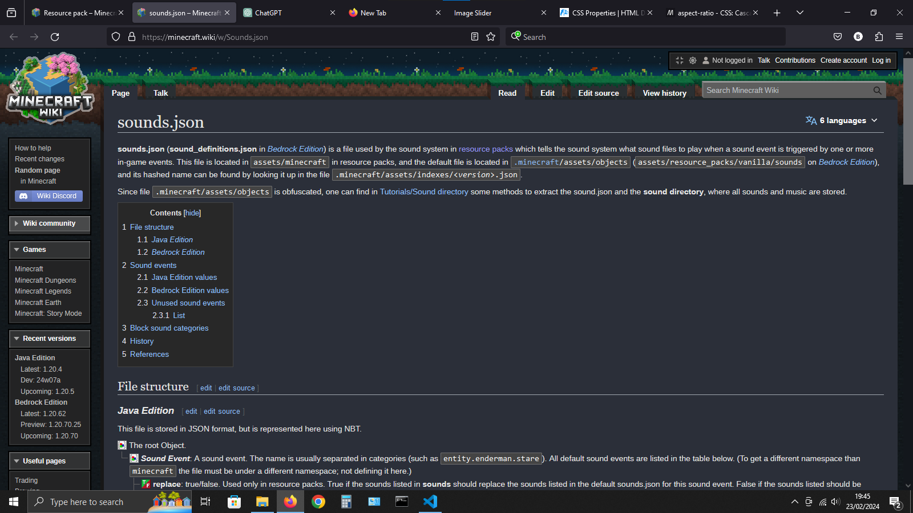
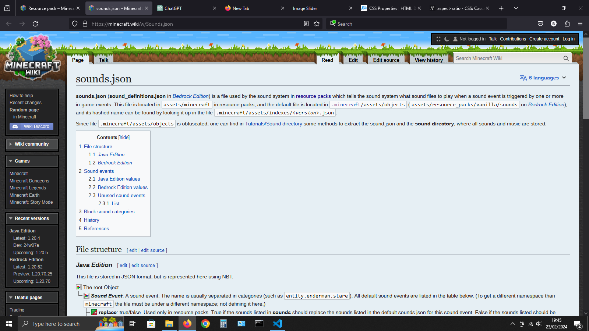

<!DOCTYPE html>
<html lang="en">
<head>
<meta charset="UTF-8">
<meta name="viewport" content="width=device-width, initial-scale=1.0">
<title>Document</title>
<style>
body {
    font-family: Arial, sans-serif;
    margin: 0;
    padding: 0;
    display: flex;
    justify-content: center;
    align-items: center;
    height: 100vh;
    background-color: #333
}

.container {
    position: relative;
    height: 100vh;
    aspect-ratio: 4/3;
    overflow: hidden;
    margin: 0 auto;
    display: flex;
    flex-direction: column;
    align-items: center;
}

.media {
    width: 100%;
    height: 75%;
    position: relative;
}

video {
    position: absolute;
    top: 0;
    left: 0;
    width: 100%;
    height: 100%;
    object-fit: cover;
}

img {
    position: absolute;
    top: 0;
    left: 0;
    width: 100%;
    height: 100%;
}

.input-container {
    width: 50vw;
    margin-bottom: 20px;
    position: relative;
    top: 0;
    z-index: 1;
}

input[type="range"] {
    width: 100%;
    margin-top: 20px;
}

.slider {
    position: relative;
    width: 2px;
    height: 100%;
    background-color: white;
    pointer-events: none;
}
</style>
</head>
<body>
    <div class="container">
        <div class="media">
            <!---->
            <!---->   <!-- COMMENT OR UNCOMMENT THESE LINES TO -->
            <video id="topMedia" src="1.mp4" autoplay loop muted></video> <!-- CHOOSE WETHER TO USE IMAGES OR VIDEOS -->
            <video id="bottomMedia" src="2.mp4" autoplay loop muted></video>
        </div>
        <div class="input-container">
            <input type="range" min="0" max="100" value="0" id="slider">
        </div>
    </div>
<script>

const slider = document.getElementById('slider');
const topMedia = document.getElementById('topMedia');
const bottomMedia = document.getElementById('bottomMedia');

slider.addEventListener('input', () => {
    const value = slider.value;
    const width = slider.offsetWidth;
    const newPosition = (value / 100) * width - slider.offsetWidth / 2;
    slider.style.left = `${newPosition}px`;

    const revealRatio = value / 100;
    topMedia.style.clipPath = `inset(0 ${100 - revealRatio * 100}% 0 0)`;
    bottomMedia.style.clipPath = `inset(0 0 0 ${revealRatio * 100}%)`;
});

</script>
</body>
</html>
